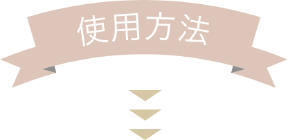
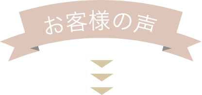

理想の「透明肌」をあなたに。
豊富なミネラルを含んだ
オールインワン美容クリーム
-
アクシード ミネラル美容クリームtype3は、
あなたに透明感のある潤いなめらか美白効果をもたらします。
-
15種類以上のミネラルや美容成分を配合し、敏感肌の方でも安心して使えるアルコール無添加処方です。さらに、無香料、無着色でお肌 に余計な負担を与えません。
-

-
化粧下地、乳液、美容液、化粧水をこれひとつでカバーできる理想のオールインワン美容クリームです。ベトつかないのに、しっとりし た潤いたっぷりのお肌に大変身。もう乾燥はこわくありません。
・保湿効果抜群。
・目尻や眉間、額、口元のしわなどが気になりだした方も、アンチエイジグ/スキンケアとしてお使いください。
・内側からあふれ出すハリと弾力でお肌を満たします。
・お客様からいただいたご意見をもとに２度の改良を重ねています。
・お使いいただいたお客様の声を常に大切にし、ご支持いただいています。
・たっぷりサイズの100gを、うれしいお手頃価格でご提供。
・シンプルで残量が分かりやすい透明ケース入り。

朝晩の洗顔後、適量を手に取り顔全体にたっぷりとなじませてください。化粧下地としてご使用される場合は、クリームがお肌になじんでさらっとしてからメイクをしてください。目安として、10分以上お待ちいただくと、クリームがお肌にしっかりなじみます。
-内容量-
100g
-成分-
コメ発酵液、水、ワセリン、BG、ミリスチン酸ミレス-3、グリセリン、セテアリルアルコール、セテアレス-20、酢酸トコフェロール、ジ メチコン、乳酸Na、PCA- Na、カルボマー、水酸化Na、ベンジルアルコール、メチルパラベン、プロピルパラベン

-
■GKさん 大阪府 40歳 女性
すごい、びっくり！オールインワンクリームって使うの始めてだったのでつけた時はさっぱりしていてイマイチかなと思ったのですが、次の日の朝しっとりしていてスベスベになっていたのでびっくりしました。量も多いのでケチケチしないでつける事ができるので助かっています。
-
■TYさん 神奈川県 36歳 女性
2個目を購入しました。脂性肌なのに乾燥肌で、冬の乾燥には困っていました。乳液などのクリーム類をつける と、肌荒れをすぐにおこしていたのですが、つけないとカサカサで…。でもこの美容クリームはしっとりうるおって、大丈夫でした。これからも宜しくお願いします。
-
■MRさん 埼玉県 28歳 女性
肌がとても潤って、ついつい肌を触ってしまいます。他社の美容クリームで失敗して、もうクリームは使わないと、心に決めていたのにこれに出会って、気持ちが変ってしまいました。
-
■NSさん 東京都 33歳 女性
ミネラル美容クリームはもう9ヶ月目になります。母にもプレゼントして今年の肌は乾燥知らずでした。肌のくすみがなくなり友人に何を使っているの？とよく聞かれて、教えてあげています。友人もミネラル美容クリームのとりこです。